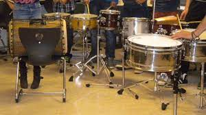

Slagwerk is mijn grote passie. Ik hou van het ritmische geluid en de krachtige beats. Hier zijn enkele van mijn favoriete slagwerkinstrumenten:
Toon afbeelding 1
Toon afbeelding 2 
Toon afbeelding 3